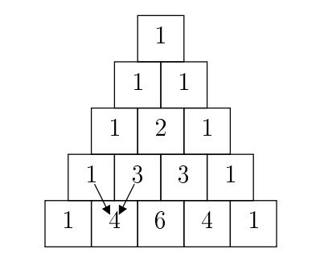
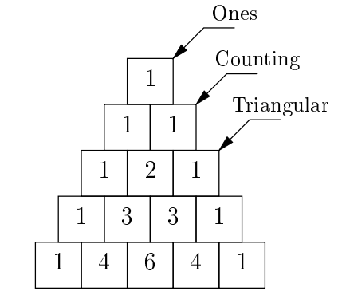

Lab 14: Final Review
Due by 11:59pm on Wednesday, April 27.
Starter Files
Download lab14.zip. Inside the archive, you will find starter files for the questions in this lab, along with a copy of the Ok autograder.
This lab has many files.
Remember to write in lab14.scm for the Scheme questions,
lab14.lark for the BNF question,
and lab14.py for all other questions.
Required Questions
Scheme
Q1: Split
Implement split-at, which takes a list lst and a non-negative number n as
input and returns a pair new such that (car new) is the first n
elements of lst and (cdr new) is the remaining elements of lst. If n is
greater than the length of lst, (car new) should be lst and (cdr new)
should be nil.
scm> (car (split-at '(2 4 6 8 10) 3))
(2 4 6)
scm> (cdr (split-at '(2 4 6 8 10) 3))
(8 10)(define (split-at lst n)
'YOUR-CODE-HERE
)Use Ok to test your code:
python3 ok -q split-atScheme Data Abstraction
Q2: Filter Odd Tree
Write a function filter-odd which takes a tree data abstraction and returns a new tree with all even labels replaced with nil.
Consider using the
mapprocedure to apply a one-argument function to a list.
Below is a Scheme-ified data abstraction of the Tree class we've been working with this semester.
; Constructs tree given label and list of branches
(tree label branches)
; Returns the label of the tree
(label t)
; Returns the list of branches of the given tree
(branches t)(define (filter-odd t)
'YOUR-CODE-HERE
)Use Ok to test your code:
python3 ok -q filter_oddPrograms as Data
Q3: Swap
Implement swap which takes an expression expr representing a call to some procedure and returns the same expression with its first two operands swapped if the value of the second operand is greater than the value of the first. Otherwise, it should just return the original expression. For example, (swap '(- 1 (+ 3 5) 7)) should return the expression (- (+ 3 5) 1 7) since 1 evaluates to 1, (+ 3 5) evaluates to 8, and 8 > 1. Any operands after the first two should not be evaluated during the execution of the procedure, and they should be left unchanged in the final expression. You may assume that every operand evaluates to a number and that there are always at least two operands in expr. You may want to consider using a let expression in addition to the provided procedures to help simplify your code.
(define (cddr s)
(cdr (cdr s))
)
(define (cadr s)
(car (cdr s))
)
(define (caddr s)
(car (cddr s))
)
(define (swap expr)
'YOUR-CODE-HERE
)python3 ok -q swapRegex
Q4: Address First Line
Write a regular expression that parses strings and returns whether it contains the first line of a US mailing address.
US mailing addresses typically contain a block number, which is a sequence of 3-5 digits, following by a street name. The street name can consist of multiple words but will always end with a street type abbreviation, which itself is a sequence of 2-5 English letters. The street name can also optionally start with a cardinal direction ("N", "E", "W", "S"). Everything should be properly capitalized.
Proper capitalization means that the first letter of each name is capitalized. It is fine to have things like "WeirdCApitalization" match.
See the doctests for some examples.
def address_oneline(text):
"""
Finds and returns if there are expressions in text that represent the first line
of a US mailing address.
>>> address_oneline("110 Sproul Hall, Berkeley, CA 94720")
True
>>> address_oneline("What's at 39177 Farwell Dr? Is there a 39177 Nearwell Dr?")
True
>>> address_oneline("I just landed at 780 N McDonnell Rd, and I need to get to 1880-ish University Avenue. Help!")
True
>>> address_oneline("123 Le Roy Ave")
True
>>> address_oneline("110 Unabbreviated Boulevard")
False
>>> address_oneline("790 lowercase St")
False
"""
block_number = r'___'
cardinal_dir = r'___' # whitespace is important!
street = r'___'
type_abbr = r'___'
street_name = f"{cardinal_dir}{street}{type_abbr}"
return bool(re.search(f"{block_number} {street_name}", text))Use Ok to test your code:
python3 ok -q address_onelineBNF
Q5: WWPD: PyCombinator
Consider this attempt at a BNF grammar for Pycombinator, a grammar which supports a subset of Python's functionality. Specifically, it is able to parse any expression with a Python arithmetic operator. The grammar is specified below:
?start: pycomb_expression
pycomb_expression: func "(" arg ("," arg)* ")"
arg: pycomb_expression | NUMBER
func: FUNCNAME
FUNCNAME: "add" | "mul" | "sub"
%ignore " "
%import common.NUMBERLet's understand and modify the functionality of this BNF with a few questions.
Use Ok to test your knowledge by choosing the best answer for each of the following "What Would PyCombinator Do" questions:
python3 ok -q wwpd-bnf -u
Submit
Make sure to submit this assignment by running:
python3 ok --submitRecommended Questions
The following problems are not required for credit on this lab but may help you prepare for the final.
Trees
Q6: Prune Min
Write a function that prunes a Tree t mutatively. t and its branches
always have zero or two branches. For the trees with two branches, reduce the
number of branches from two to one by keeping the branch that has the smaller
label value. Do nothing with trees with zero branches.
Prune the tree in a direction of your choosing (top down or bottom up). The result should be a linear tree.
def prune_min(t):
"""Prune the tree mutatively.
>>> t1 = Tree(6)
>>> prune_min(t1)
>>> t1
Tree(6)
>>> t2 = Tree(6, [Tree(3), Tree(4)])
>>> prune_min(t2)
>>> t2
Tree(6, [Tree(3)])
>>> t3 = Tree(6, [Tree(3, [Tree(1), Tree(2)]), Tree(5, [Tree(3), Tree(4)])])
>>> prune_min(t3)
>>> t3
Tree(6, [Tree(3, [Tree(1)])])
"""
"*** YOUR CODE HERE ***"
Use Ok to test your code:
python3 ok -q prune_minQ7: Add trees
Define the function add_trees, which takes in two trees and returns a new
tree where each corresponding node from the first tree is added with the node
from the second tree. If a node at any particular position is present in one
tree but not the other, it should be present in the new tree as well.
Hint: You may want to use the built-in zip function to iterate over multiple sequences at once.
def add_trees(t1, t2):
"""
>>> numbers = Tree(1,
... [Tree(2,
... [Tree(3),
... Tree(4)]),
... Tree(5,
... [Tree(6,
... [Tree(7)]),
... Tree(8)])])
>>> print(add_trees(numbers, numbers))
2
4
6
8
10
12
14
16
>>> print(add_trees(Tree(2), Tree(3, [Tree(4), Tree(5)])))
5
4
5
>>> print(add_trees(Tree(2, [Tree(3)]), Tree(2, [Tree(3), Tree(4)])))
4
6
4
>>> print(add_trees(Tree(2, [Tree(3, [Tree(4), Tree(5)])]), \
Tree(2, [Tree(3, [Tree(4)]), Tree(5)])))
4
6
8
5
5
"""
"*** YOUR CODE HERE ***"
Use Ok to test your code:
python3 ok -q add_treesObjects
Let's implement a game called Election. In this game, two players compete to try and earn the most votes. Both players start with 0 votes and 100 popularity.
The two players alternate turns, and the first player starts. Each turn, the current player chooses an action. There are two types of actions:
- The player can debate, and either gain or lose 50 popularity. If the player
has popularity
p1and the other player has popularityp2, then the probability that the player gains 50 popularity ismax(0.1, p1 / (p1 + p2))Note that themaxcauses the probability to never be lower than 0.1. - The player can give a speech. If the player has popularity
p1and the other player has popularityp2, then the player gainsp1 // 10votes and popularity and the other player losesp2 // 10popularity.
The game ends when a player reaches 50 votes, or after a total of 10 turns have been played (each player has taken 5 turns). Whoever has more votes at the end of the game is the winner!
Q8: Player
First, let's implement the Player class. Fill in the debate and speech
methods, that take in another Player other, and implement the correct
behavior as detailed above. Here are two additional things to keep in mind:
- In the
debatemethod, you should call the providedrandomfunction, which returns a random float between 0 and 1. The player should gain 50 popularity if the random number is smaller than the probability described above, and lose 50 popularity otherwise. - Neither players' popularity should ever become negative. If this happens, set it equal to 0 instead.
### Phase 1: The Player Class
class Player:
"""
>>> random = make_test_random()
>>> p1 = Player('Hill')
>>> p2 = Player('Don')
>>> p1.popularity
100
>>> p1.debate(p2) # random() should return 0.0
>>> p1.popularity
150
>>> p2.popularity
100
>>> p2.votes
0
>>> p2.speech(p1)
>>> p2.votes
10
>>> p2.popularity
110
>>> p1.popularity
135
"""
def __init__(self, name):
self.name = name
self.votes = 0
self.popularity = 100
def debate(self, other):
"*** YOUR CODE HERE ***"
def speech(self, other):
"*** YOUR CODE HERE ***"
def choose(self, other):
return self.speechUse Ok to test your code:
python3 ok -q PlayerQ9: Game
Now, implement the Game class. Fill in the play method, which should
alternate between the two players, starting with p1, and have each player take
one turn at a time. The choose method in the Player class returns the
method, either debate or speech, that should be called to perform the
action.
In addition, fill in the winner method, which should return the
player with more votes, or None if the players are tied.
### Phase 2: The Game Class
class Game:
"""
>>> p1, p2 = Player('Hill'), Player('Don')
>>> g = Game(p1, p2)
>>> winner = g.play()
>>> p1 is winner
True
"""
def __init__(self, player1, player2):
self.p1 = player1
self.p2 = player2
self.turn = 0
def play(self):
while not self.game_over():
"*** YOUR CODE HERE ***"
return self.winner()
def game_over(self):
return max(self.p1.votes, self.p2.votes) >= 50 or self.turn >= 10
def winner(self):
"*** YOUR CODE HERE ***"
Use Ok to test your code:
python3 ok -q GameQ10: New Players
The choose method in the Player class is boring, because it always returns
the speech method. Let's implement two new classes that inherit from Player,
but have more interesting choose methods.
Implement the choose method in the AggressivePlayer class, which returns the
debate method if the player's popularity is less than or equal to other's
popularity, and speech otherwise. Also implement the choose method in the
CautiousPlayer class, which returns the debate method if the player's
popularity is 0, and speech otherwise.
### Phase 3: New Players
class AggressivePlayer(Player):
"""
>>> random = make_test_random()
>>> p1, p2 = AggressivePlayer('Don'), Player('Hill')
>>> g = Game(p1, p2)
>>> winner = g.play()
>>> p1 is winner
True
"""
def choose(self, other):
"*** YOUR CODE HERE ***"
class CautiousPlayer(Player):
"""
>>> random = make_test_random()
>>> p1, p2 = CautiousPlayer('Hill'), AggressivePlayer('Don')
>>> p1.popularity = 0
>>> p1.choose(p2) == p1.debate
True
>>> p1.popularity = 1
>>> p1.choose(p2) == p1.debate
False
"""
def choose(self, other):
"*** YOUR CODE HERE ***"
Use Ok to test your code:
python3 ok -q AggressivePlayer
python3 ok -q CautiousPlayerLists
Q11: Intersection - Summer 2015 MT1 Q4
Implement intersection(lst_of_lsts), which takes a list of lists and returns a list of distinct elements
that appear in all the lists in lst_of_lsts. If no number appears in all of the lists, return the empty list.
You may assume that lst_of_lsts contains at least one list.
def intersection(lst_of_lsts):
"""Returns a list of distinct elements that appear in every list in
lst_of_lsts.
>>> lsts1 = [[1, 2, 3], [1, 3, 5]]
>>> intersection(lsts1)
[1, 3]
>>> lsts2 = [[1, 4, 2, 6], [7, 2, 4], [4, 4]]
>>> intersection(lsts2)
[4]
>>> lsts3 = [[1, 2, 3], [4, 5], [7, 8, 9, 10]]
>>> intersection(lsts3) # No number appears in all lists
[]
>>> lsts4 = [[3, 3], [1, 2, 3, 3], [3, 4, 3, 5]]
>>> intersection(lsts4) # Return list of distinct elements
[3]
"""
elements = []
"*** YOUR CODE HERE ***"
return elementsUse Ok to test your code:
python3 ok -q intersectionQ12: Deck of cards
Write a list comprehension that will create a deck of cards, given a
list of suits and a list of ranks. Each
element in the list will be a card, which is represented by a 2-element list
of the form [suit, rank].
def deck(suits, ranks):
"""Creates a deck of cards (a list of 2-element lists) with the given
suits and ranks. Each element in the returned list should be of the form
[suit, rank].
>>> deck(['S', 'C'], [1, 2, 3])
[['S', 1], ['S', 2], ['S', 3], ['C', 1], ['C', 2], ['C', 3]]
>>> deck(['S', 'C'], [3, 2, 1])
[['S', 3], ['S', 2], ['S', 1], ['C', 3], ['C', 2], ['C', 1]]
>>> deck([], [3, 2, 1])
[]
>>> deck(['S', 'C'], [])
[]
"""
"*** YOUR CODE HERE ***"
return ______
Use Ok to test your code:
python3 ok -q deckLinked Lists
Q13: O!-Pascal - Fall 2017 Final Q4
Pasal's Triangle is perhaps familiar to you from the diagram below, which shows the first five rows.

Every square is the sum of the two squares above it (as illustrated by the arrows showing here the value 4 comes from), unless it doesn't have two squares above it, in whih case its value is 1.
Given a linked list that represents a row in Pasal's triangle, return a linked list that will represent the row below it.

def pascal_row(s):
"""
>>> a = Link.empty
>>> for _ in range(5):
... a = pascal_row(a)
... print(a)
<1>
<1 1>
<1 2 1>
<1 3 3 1>
<1 4 6 4 1>
"""
"*** YOUR CODE HERE ***"
Use Ok to test your code:
python3 ok -q pascal_row